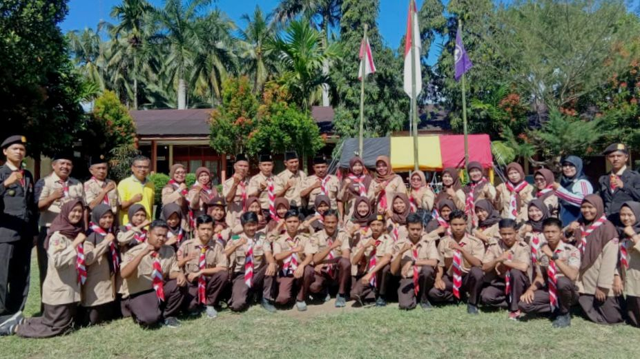
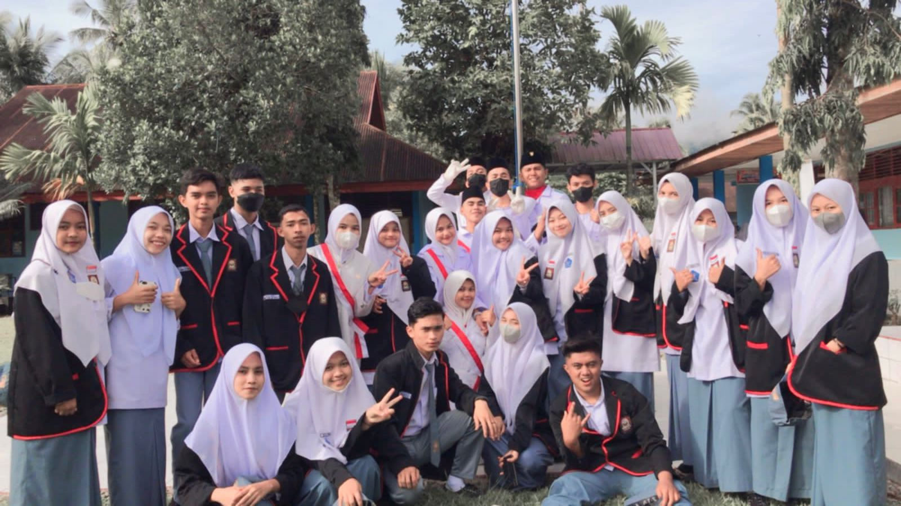
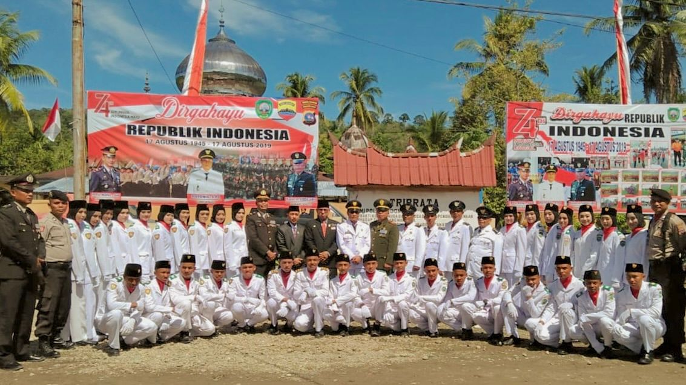

"Nama saya Sahira Oktavia. Saya adalah seorang mahasiswa yang bersemangat di Institut Teknologi Padang dengan jurusan Teknik Informatika. Di samping kegiatan dalam perkuliahan, saya aktif dalam kegiatan ekstrakurikuler pramuka. Sebagai seorang pramuka, saya belajar tentang kepemimpinan, kerjasama tim, dan keberanian, yang semuanya merupakan nilai-nilai yang dapat diterapkan dalam kehidupan sehari-hari. Selain itu, saya juga memiliki hobi jogging, yang tidak hanya baik untuk kesehatan fisik tetapi juga memberikan kesempatan untuk bersantai, menjernihkan pikiran, dan menikmati keindahan alam di sekitar. Dengan gabungan antara kegiatan akademis, kegiatan ekstrakurikuler, dan hobi, saya bersemangat untuk mengembangkan diri serta mengambil bagian dalam berbagai aspek kehidupan kampus dan masyarakat.".
"Saat mengikuti kegiatan pramuka, saya memiliki berbagai pengalaman yang berharga dan membentuk karakter. Salah satu momen berkesan adalah saat partisipasi dalam kegiatan kemah di alam terbuka. Saat itu, saya dan tim belajar tentang kemandirian, kerjasama tim, dan keberanian dalam menghadapi tantangan alam.".
"Mengikuti organisasi seperti OSIS bisa memberikan pengalaman yang berharga bagi saya. Pengalaman seperti keterlibatan dalam pengambilan keputusan, kepemimpinan, kerja sama tim, menambah keterampilan, belajar mengembangkan koomunikasi dan bertanggung jawab atas kewajiban yang dilakukan di dalam osis."
"Paskibra memberikan pengalaman kedisiplinan, rasa patriotisme, dan peningkatan rasa bangga terhadap negara sendiri."
Silakan hubungi saya melalui email di sahiraoktavia12@gmail.com.
Ikuti saya di Instagram: Sahira Oktavia
Hubungi saya via WhatsApp: +62823-8435-8401